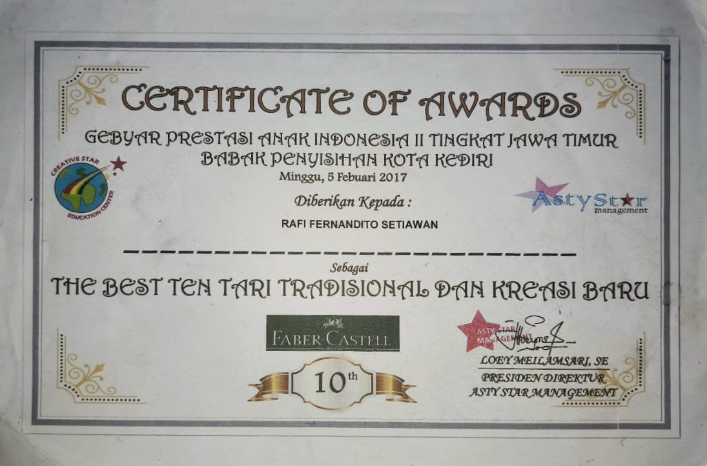
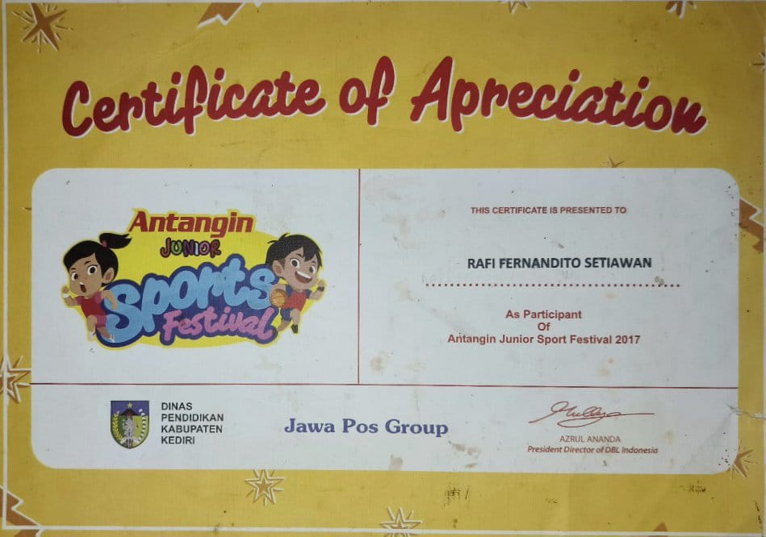
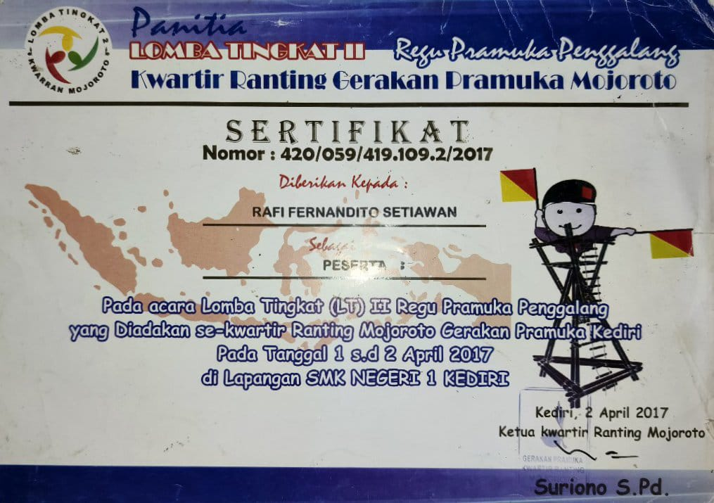
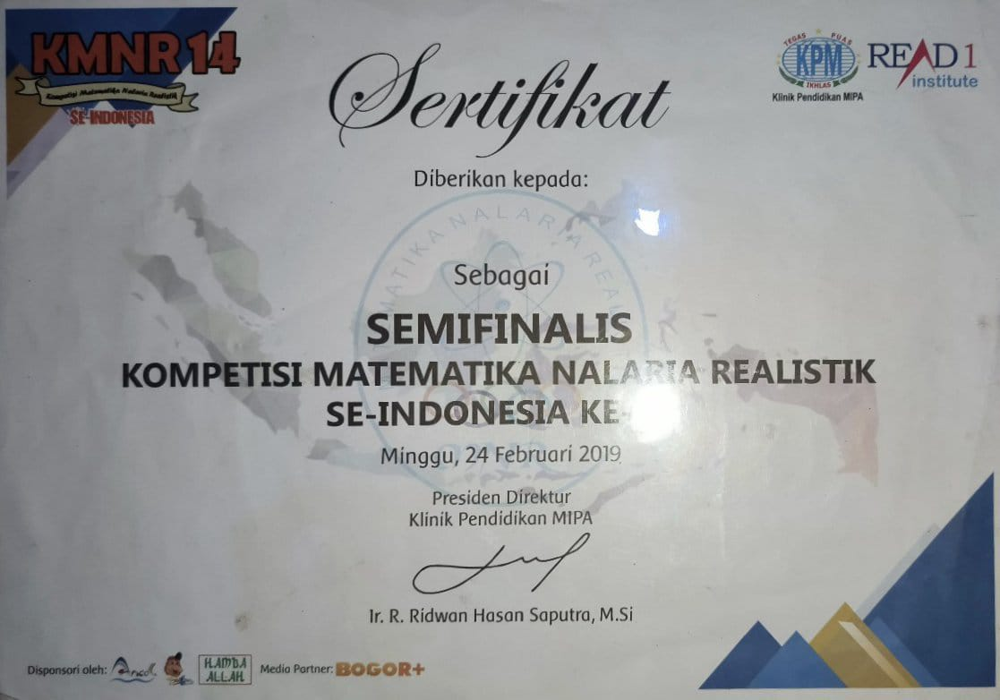
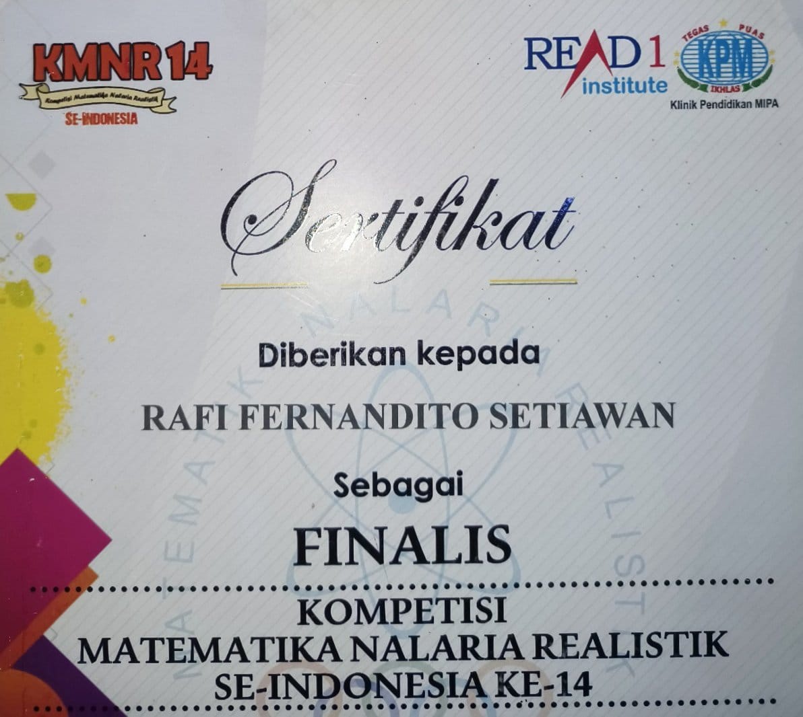
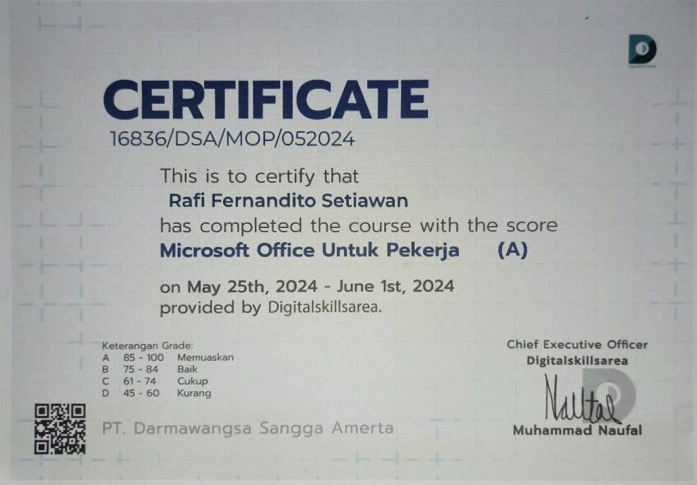
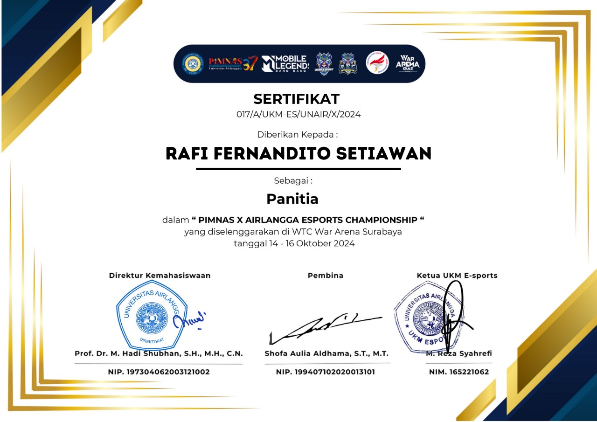

Welcome to my first website! This is where I practice my skills and share my personal journey. I hope you enjoy exploring the pages and get to know more about me, my achievements, and the ideas I am passionate about.
This website serves multiple purposes, including:
Practicing and improving my coding skills
Introducing myself to the world
Sharing my ideas and vision with others
Showcasing my achievements
I hope you enjoy this site and feel inspired by the things I am working on!
My Stories
Introduce
My name is Rafi Fernandito Setiawan, or known as Rafi. My birthplace is Kediri City, located in East Java, on January 26 2005. Since childhood, I have always had high aspirations. Even though I live in simple conditions, my parents always encourage me to dare to achieve my dreams and work hard to make them come true.
The period of my life in kindergarden
My childhood was filled with playing in the rice fields and traveling around the village on a bicycle with my friends after school, and reciting the Koran every evening after sunset. However, the desire to learn always burned within me. I have always been a diligent student at school, even though I often only had limited textbooks. I always study every time I come home from studying the Koran, more precisely I always study from 7 to 9, then I sleep. I wake up at 4 am to study, pray, and prepare my needs to go to school.
The period of my life in elementary school
Not only did I struggle in the academic field, when I was in elementary school, I practiced non-academic fields such as chess, modern dance and scouting activities. For chess competitions I have won 4th place, for modern dance I have qualified up to city level, and for scouting I have represented my school in simultaneous camping events. I also took part in academic competitions and won several competitions, until at the end of the class when junior high school simultaneously held a PPDB independent test, I took part and only one school passed and continued to my favorite school via the PPDB independent test route.
The period of my life in junior high school
When I was in junior high school, I didn't have much time because class 8, semester 2, was on holiday for 2 years. However, when I was in grade 7, I qualified to represent my school in a mathematics competition at the national level with my friends. Then when I was in grade 8, semester 1, I took drama training and podcast training. But when it was time to perform, the school was closed for 2 weeks, and at that time I trained myself again, but it turned out that those 2 weeks turned into 2 years.
Because there were no independent PPDB selection tests from my favorite high school or national exams due to the pandemic, I relied more on the national charter that I got in grade 7 rather than my report card grades, where the scores were mixed because at that time the pandemic. Luckily, thanks to this charter, I was accepted into my favorite high school in my area via the achievement route.
The period of my life in Senior high school
When I was in high school I wanted to try something new, namely organizations. I took part in the selection to become a student council administrator and I was accepted. When I took office, I created a joint work program with other members of the student council management and thanks to God's permission, the events we created were all successful. There was 1 event where I was the representative of the committee and 1 event where I was chairman of the committee, both of which were equally busy and tired, but when the event was successfully carried out in sequence, the tiredness disappeared and became a feeling of joy.
After completing high school, I tried hard to get a scholarship to go to college. Thanks to hard work and support from my family, I managed to get a scholarship even though the scholarship was from an individual, not from an institution. There, I chose to study informatics, according to my interests and talents.
The period of my life in University
When I was in my first semester of college, I took part in the PIMNAS x AEC committee selection and I passed by becoming a member of the PIMNAS x AEC committee in the field of PDD which was tasked with carrying out documentation which was carried out during pre-event until after the event started. Starting while the meeting was taking photos for ID cards, to taking photos of the committee after the event was over.
My Achievements
My achievements during elementary school
1. Top 10 city level champion of elementary school dance

2. Become a sponsor of Antangin Junior product

3. Representatives in inter-school scouting activities

My achievements during junior high school
1. Became a semifinalist in the national mathematics competition

2. Became a finalist in the national mathematics competition

My achievements during senior high school
1. Top 7 national mathematics olympiad
2. Top 3 national mathematics olympiad
3. Finisher in the silver category in the running competition
4. Become student council administrator for 1 period
5. Representative in the competition for college subjects majoring in industrial engineering
6. Passed the office test with an A grade

My achievements during college
1. National committee certificate (PIMNAS x AEC)

These are just a few of the steps I’ve taken to grow as a developer, and I am excited to see what the future holds!
My Failures
Here I will mention things that made my life fail in the past.:
Lack of life planning:
When I was still a teenager, I really underestimated the so-called life plan. I just lived my days normally without a plan and without ambition which caused my life at that time to be very chaotic.
Taking relationships for granted:
This also happened when I was still a teenager. I used to be a very closed and introverted person, even my friends and family also called me anti-camera because I really didn't want to get involved with other people in real life or social media. This caused me to not know enough people in high school which made it difficult for me to find information about something.
Not focusing on myself:
When I was still in high school and in 3rd grade, I had someone I liked and I focused on the person I liked by honing the skills that the person I liked liked, which might not be useful in the future.
Too crazy about hobbies and doesn't hone skills:
This happened when I was still in high school and I really liked running and cycling and this resulted in me always honing those skills and being reluctant to study school material.
My Hobbies
The following are some of my hobbies so far:
Running:
of high school because I wanted to enroll in an official school, but over time this became one of my hobbies. Usually I run when I have a problem or when I'm worried about something. I use running as an outlet for my feelings of unease. During my training, my running was very structured in terms of time, speed and distance. but when I'm in an unstable state of mind I can run anytime and anywhere, besides that my speed and distance in running will also increase if I'm in an unstable state of mind.Why do I say running is my hobby to relieve myself when my mind is confused? That's because since I was in second year of high school I wasn't interested in games or films anymore, I also didn't have a girlfriend or friends who were very, very close so that I could talk about all my problems in high school. My close friends are all suitable for playing, not suitable for telling stories so I vent my chaotic emotions or feelings into running.
Reading a book:
I have always been a person who is very anti-reading, be it books, comics, novels, and so on. I first started reading books because I was so bored and I didn't get angry or have anything to say. I tried reading it and it turns out it's quite interesting. In the end, reading books became one of my hobbies when I wanted a calm and peaceful atmosphere. I started reading books with business themes, how to think about being a businessman, how to become rich, and so on. Because I really want to do a business that involves coding in the future, I am also little by little interested in the world of business and how to become a businessman. Over time, I became interested in reading books with themes about human life, the experiences of historical figures, and how to change yourself to become a better person.
GYM:
I started doing workouts in the middle of grade 11, the first time I started doing workouts or going to the gym was to shape my small and weak body into a big and strong body, but over time the reason changed to venting my frustration at something. or something. It's said to be similar to the reason I ran. However, now the reason I have changed is that I shape and train myself to be strong and make myself feel proud of myself in the future because I dared to be consistent in the past. Usually I do this from 3 to 5 in the afternoon at the gym or in my dorm room. The movements I usually do are various variations of push ups, sit ups, skipping, planks, lifting dumbbells, and many other movements that I usually use to build my muscles. Due to my work out habit, I pay attention to every food and drink that enters my stomach. I also started to adjust my sleeping hours, which usually stay up late so that the maximum sleep limit must be under 10 pm.
Coding:
I have been interested in the world of coding since I was a child. I see people coding and it looks really cool. This is also what caused me to major in informatics engineering when I was in college, I really wanted to be able to code because my interest has been there since I was little. I also want to make this my dream. In the future I want to work in this field with remote work, I am very interested in remote work because there is no need to go out to work, besides that remote work is also very efficient because the market is very wide from various countries. Apart from that, working remotely can also be done anytime and anywhere without thinking about where we are and when we do our work, we just need to pay attention to the latest deadline for the job desk we are taking. If you don't want to delay, we can finish it directly.
My Favorites and My Unfavorites
Some of my favorites and my unfavorite:
Food: favorite: Cheese Burger & Fried Rice
Unfavorite: Spicy Food
Drink: favorite: Mineral Water
Unfavorite: Sugary Drink
Taste of Food: favorite: Savory and Salty
Unfavorite: Spicy
Taste of Drink: favorite: Savory and Salty
Unfavorite: Sugary
Things I Hate
Here are some of the things I dislike and want to express:
1. A person who breaks a promise
I don't like people who break their promises, especially those who take them too lightly. For example, making an appointment at 7 am but being 45 minutes late. For me, a promise is an undocumented or unwritten contract that must be kept, unless there is an urgent situation that is more important than what was promised.
2. People who smoke in public
Smoking alone is very detrimental to people around the smoker (passive smokers), let alone smoking in public places, especially while driving. This is very dangerous for pregnant women, young children, people with a history of asthma, the elderly, drivers, and there are many more effects of smoking in public places that are very detrimental to people around the smoker.

.jpg)
.jpg)
.jpg)
.jpg)
.jpg)